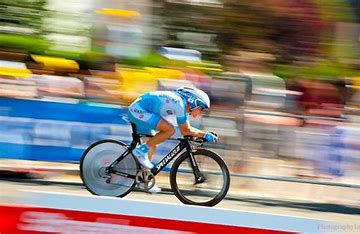
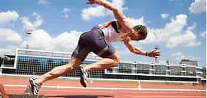

The history of sports extends back to the Ancient world in 7000 BCE. The physical activity that developed into sports had early links with warfare and entertainment.
Study of the history of sport can teach lessons about social changes and about the nature of sport itself, as sport seems involved in the development of basic human skills (compare play)
.[citation needed] As one delves further back in history, dwindling evidence makes theories of the origins and purposes of sport more and more difficult to support.
As far back as the beginnings of sport, it was related to military training. For example, competition was used as a mean to determine whether individuals were fit and useful for service.
[citation needed] Team sports were used to train and to prove the capability to fight in the military and also to work together as a team (military unit).
Sports in pre-history
Paintings of humans in the cave of swimmers
Cave paintings found in the Lascaux caves in France appear to depict sprinting and wrestling in the Upper Paleolithic around 15,300 years ago.Cave paintings in the Bayankhongor Province of Mongolia dating back to the Neolithic Age (c. 7000 BCE) show a wrestling match surrounded by crowds.Neolithic Rock art found at the cave of swimmers in Wadi Sura,
near Gilf Kebir in Egypt shows evidence of swimming and archery being practiced around 10,000 BCE.
Prehistoric cave paintings in Japan depict a sport similar to sumo wrestling.
Ancient Sumer
An Egyptian burial chamber mural, from the tomb of Khnumhotep and Niankhkhnum dating to around 2400 BCE, showing wrestlers in action[8]
Various representations of wrestlers have been found on stone slabs attributed to the Sumerian civilization.[9] One showing three pairs of wrestlers has been generally dated to around 3000 BCE.
A cast bronze figurine[11] (perhaps the base of a vase) found at Khafaji in Iraq shows two figures in a wrestling hold and dates to around 2600 BCE. Interpreted as one of the earliest depictions of sport, the statue is housed in the National Museum of Iraq.
Archeology has also found early suggestions pointing to the sport of boxing in ancient Sumer. The Epic of Gilgamesh gives one of the first historical records of sport,
with Gilgamesh engaging in a form of belt wrestling with Enkidu. The cuneiform tablets recording the tale date to around 2000 BCE; however,
the historical Gilgamesh is supposed to have lived around 2800 to 2600 BCE. The Sumerian king Shulgi (c. 21st century BCE) boasts of his prowess in sport in the Self-praise of Shulgi A, B, and C.
Fishing hooks not unlike those made today have been found during excavations at Ur, suggesting some sort of angling activity in Sumer around 2600 BCE.
Ancient Egypt
The Charioteer of Delphi, Delphi Museum
Monuments to the Pharaohs found at Beni Hasan dating to around 2000 BCE.
indicate that a number of sports, including wrestling, weightlifting, long jump, swimming, rowing, archery, fishing
and athletics, as well as various kinds of ball games, were well-developed and regulated in Ancient Egypt. Other Egyptian sports also included javelin throwing and high jump.
An earlier portrayal of figures wrestling was found in the tomb of Khnumhotep and Niankhkhnum in Saqqara dating to around 2400 BCE.
Benefits of Exercise
Weight management
function improvement
longer lifespan
sleep quality
1 week diet plan
meals
breakfast
lunch
snack
dinner
monday
poha with veggies
brown rice,resam & cabbage stir-fry
low-gelysemic fruits
wheat dosa
tuesday
vegtable oats
brown rice, beetroot poriyal
rosted chana
chapatis
wednesday
ragi rava dosal
brown rice pulao
whole wheat bread with almond
besam chilla with vegtables
thursday
vegtable upma
brown rice
rosted makhana
chapati or roties
friday
brown rice idlis with coconut chutney
daliya khichdi
a handful of peanuts
rotia with a bowl
saturday
brocoli
brown rice
banana or any other
chapati or roties
sunday
ragi banana pancakes
quinoa fried rice
baked vegtable cutiets
bajra
Photos of different sports

this is cyclist

this is the runnerthis is a footbalist